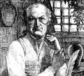

Batı edebiyatının en tartışmalı yazarlarından olan Marquis de Sade (1740-1814), Fransız bir aristokrattı. Bir porno yazarı olarak cinsel şiddeti içeren metinleri, okurları yüzlerce yıl boyunca şaşkınlığa düşürmüştür. The 120 Days of Sodom (Sodom’un 120 Günü) isimli ünlü eseri, başkalarına fiziksel acı vermekten zevk almak anlamına gelen sadizm sözcüğüne kaynaklık etmiştir.
De Sade’nin yazıları ve skandallarla dolu hayatı Fransa’da korkunç tepkilere neden oldu. Hayatının farklı dönemlerinde zindana atıldı, deli olduğu söylendi ve ölüme mahkum edildi. Tüm bunlara rağmen yetmiş dört yaşına kadar hayatta kalmayı başardı. Oyun ve kitaplarında, hiçbir ahlaki değer tarafından kısıtlanmamış cinsel zevkin en büyük mutluluk olduğunu savunmaya devam etti.
Asil bir ailenin çocuğu olan Sade, Paris’te doğdu. La Coste kasabasındaki ailesinin kalesinde büyüdü. Bir dönem Fransız ordusunda subay olarak hizmet etti. 1767 yılında kaleyi ve babasının “Marquis” unvanını devraldı.

1760’lı yılların başında, La Coste’u kendi cinsel oyun bahçesi ve zindanı haline getirmişti. Kaledeki seks partileri için erkek ve kadın fahişeler kiralıyordu. Daha sonra bu kişilerden bazıları Sade’ın kendilerini zorla tuttuğunu ileri sürecekti. Birkaç fahişeyi zehirlemesinin ardından eşcinsellik ile suçlanarak yargılandı ve ölüme mahkum edildi. İtalya’ya kaçarak bu cezadan kurtuldu. Sonunda yakalanıp zindana atıldı. Ancak ölüm cezasını temyiz etmeyi başardı.
Sade sonraki on iki yılını parmaklıklar ardında geçirdi. Bu süre içerisinde tartışmalı kitabı The 120 Days of Sodom’u yazdı. Kitap dört zengin çapkının yaptıklarını anlatıyordu. Bunlar bir grup kurbanı önce kaçırıyor, sonra kötüye kullanıyor, ardında da katlediyordu. Tecavüz ya da hayvan ve ölülerle ilişkiye girme gibi birçok cinsel sapkınlığı içeren kitap, 20. yy’a kadar yayınlanmadı. Her dönem tartışmalı bir metin olarak değerlendirilmeye devam etti.
Sade desteklediği Fransız devriminin ardından serbest bırakıldı. İsimsiz bir şekilde pornografik kitaplar yayınladı. 1801 yılında Napoléon Bonaparte (1769–1821) tarafından yeniden hapsedildi. Hayatının kalan kısmını akıl hastanesinde geçirdi.
Ek Bilgiler
1- De Sade, 4 Temmuz 1789 tarihine kadar Paris’teki Bastille Hapishanesi’nde kaldı. On gün sonra Fransız Devrimi’ni başlatan büyük baskın gerçekleşecekti.
2- 1975 yılında İtalyan yönetmen Pier Paolo Pasolini (1922–1975), “The 120 Days of Sodom”u beyazperdeye uyarladı. “Salò o le 120 giornate di Sodoma” adını taşıyan film sinema tarihinin en çok yasaklanan yapımlarından biri oldu. ABD’de gösterime girmesine asla izin verilmedi.
3- Peter Weiss’in (1916–1982) “Marat / Sade” adlı oyunu Sade’in Bastille’deki günlerini konu alır. 1964 yılında Broadway’de sahnelenen oyun sonraki yıl Tony Ödülü’nü aldı. İki yıl sonra filme çekildiğinde Sade rolünü Patrick Magee (1922–1982) canlandırdı. 2007 yılında oyun yeniden sahnelendi.